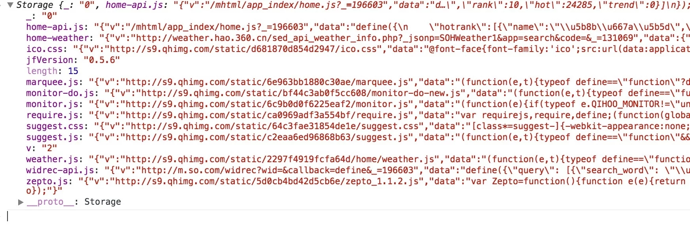
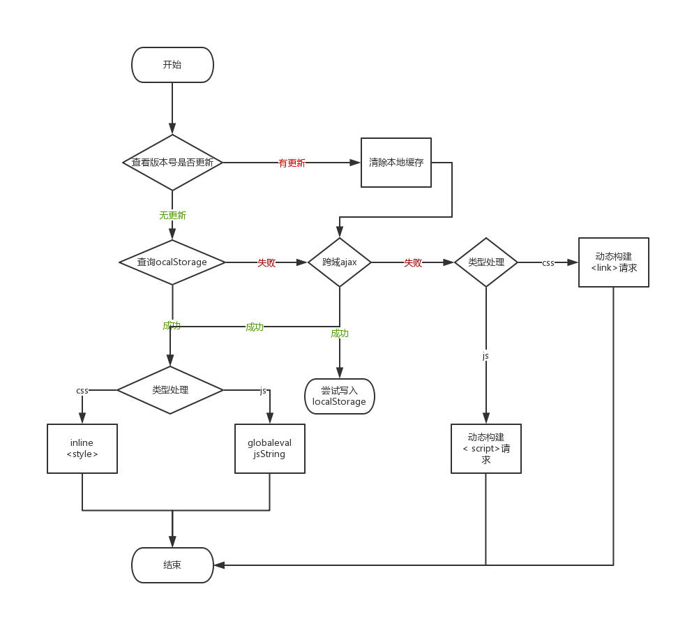
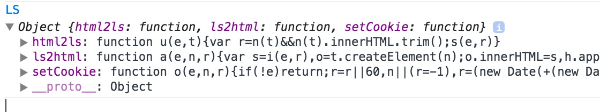
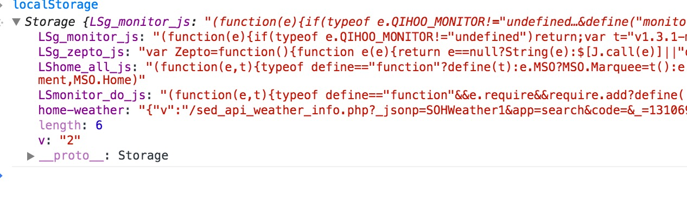
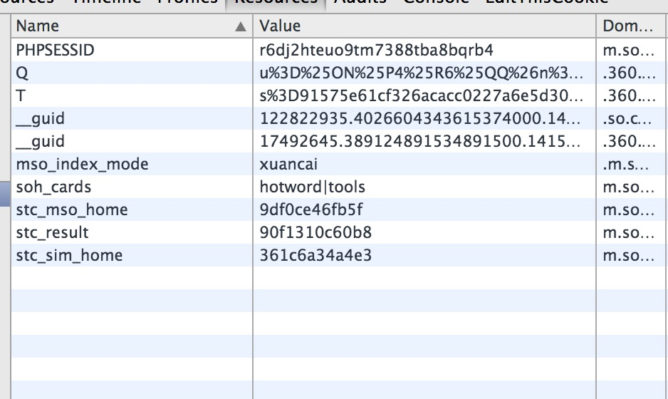
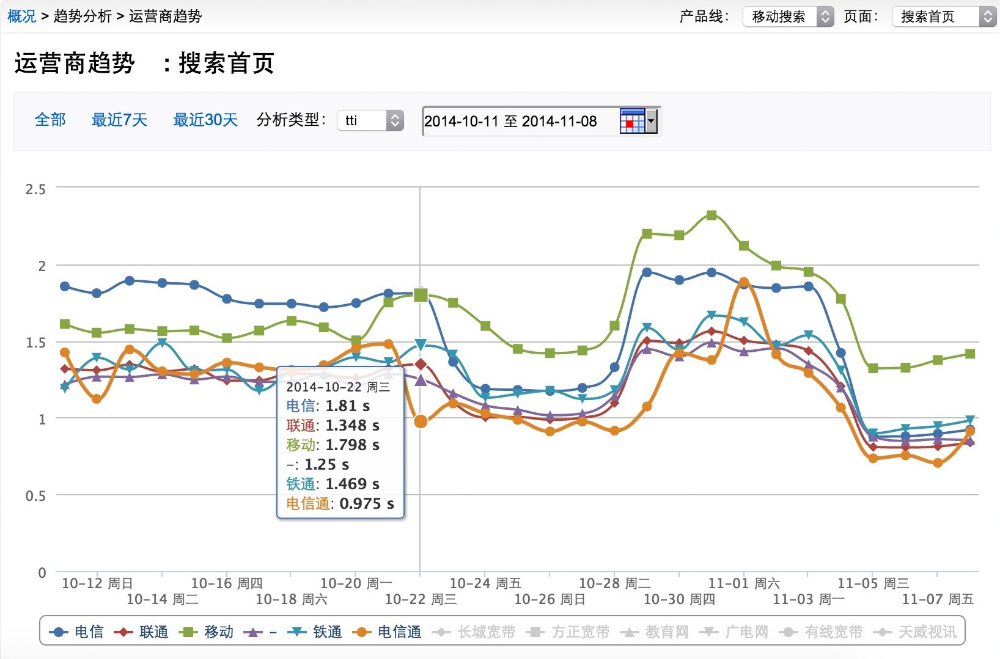
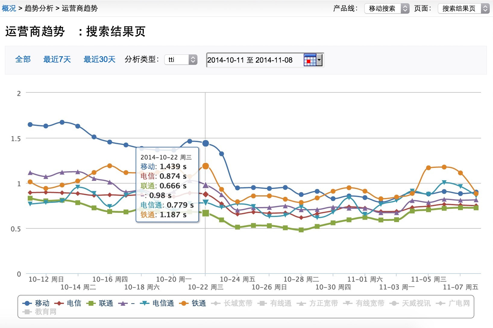
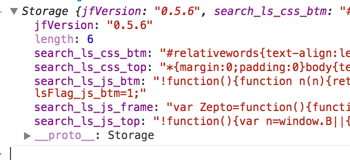

// 存
localStorage.foo = 'bar';
localStorage['foo'] = 'bar';
localStorage.setItem('foo', 'bar');
// 取
localStorage.foo;
localStorage['foo'];
localStorage.getItem('foo');
// 删
localStorage.removeItem('foo');
// 清
localStorage.clear();
console.time('fill');
for(var i = 0; ; ++i){
try{
localStorage.setItem(i, '');
} catch(e){
console.log(e);
console.log('共存了' + i +'个key');
break;
}
}
console.timeEnd('fill');
DOMException: Failed to execute 'setItem' on 'Storage': Setting the value of '892331' exceeded the quota. {message: "Failed to execute 'setItem' on 'Storage': Setting the value of '892331' exceeded the quota.", name: "QuotaExceededError", code: 22...
共存了892331个key
fill: 35321.370ms
第一版核心代码
new MSO.Storage({
id : moduleName + '.js',
v : url,
getOriginData: function (next) {broadcast
MSO.ajaxGet(url, function (result) {
next(result);
}, function(){
MSO.normalGet(url);
});
}
}).getData(function (data) {
global['ev' + 'al'](data);
context.onScriptLoad(moduleName)
});

 第一版流程图
{%lscookie='result'%}
<script data-ls="b_js">
alert(1);
</script>
{%if !hasCookie('stc_nls')%}
{%if !isset($stc_ls_base_flag)%}
{%$stc_ls_base_flag=true%}
<script src="ls.js"></script>
{%/if%}
{%if getCookie('stc_result') != "6404795474fe"%}
<script>LS.setCookie("stc_result","6404795474fe")</script>
{%/if%}
{%/if%}
{%if !hasCookie('stc_nls') && getCookie('stc_result') == "6404795474fe"%}
<script>LS.ls2html("b_js","script","stc_result")</script>
{%else%}
<script id="stc_b_js">alert(1)</script>
<script>LS.html2ls("b_js","stc_b_js")</script>
{%/if%}
ls.js 
function getLs(key, cookieName) {
var value = '';
try {
value = localStorage[NAME_SPACE + key] || '';
} catch(e) { }
if(value.length < 100) {
document.documentElement.style.display = 'none';
location.reload(true);
}
return value;
}
function setLs(key, value) {
try { // 还是有可能存入错误
localStorage[NAME_SPACE + key] = value;
if(value !== localStorage[NAME_SPACE + key] ) {
clearAll();
}
} catch(e) {
clearAll();
}
}
不支持localstroage: 标记stc_nls=1 localstorage失败：删除对应cookie
不支持js的情况： 页面用meta重定向到极速版，并在url中带上noscript=1 极速版controller如果发现query里含有noscript=1,种上stc_nls=1的cookie
 
 
'MOD_INLINE_TO_LS' => true
//第一次
try {
! function(window, document) {
var localStorage = window.localStorage,
setCookie = function f(o, n, t, s) {
return e.cookie = o + "=" + encodeURIComponent(n) + ";domain=" + t + ";path=/;expires=" + s.toGMTString() + ";", f
},
s = "lssp",
i = "lsv",
l = "4249c97ff2515cb3",
prefix = "search_ls_";
if (localStroage) {
[prefix + "js_top", prefix + "css_top", prefix + "css_btm", prefix + "js_frame", prefix + "js_btm"].forEach(function(o) {
el = e.getElementById(o), el && (localStroage[o] = el.innerHTML)
});
var t = new Date,
now = +a;
localStroage[prefix + "css_top"].length > 100 ? (t.setTime(m + 6048e5), setCookie(i, l, e.domain, t)) : (setCookie(i, "", e.domain, t), t.setTime(now + 6048e5), setCookie(s, "no", e.domain, t));
for (var c in localStorage) 0 == c.indexOf(prefix) && -1 == c.indexOf("js_top") && -1 == c.indexOf("css_top") && -1 == c.indexOf("css_btm") && -1 == c.indexOf("js_frame") && -1 == c.indexOf("js_btm") && localStorage.removeItem(c)
}
}(window, document);;
} catch (err) {}
<style id="search_ls_css_top">
body{...}
</style>

// 第二次
try {
! function(window, document) {
function getId(o) {
return document.getElementById(o)
}
var localStorage = window.localStorage,
setCookie = function o(t, e, n, l) {
return document.cookie = t + "=" + encodeURIComponent(e) + ";domain=" + n + ";path=/;expires=" + l.toGMTString() + ";", o
},
lsSupport = "lssp",
lsControl = "lsv",
lsPrefix = "search_ls_",
LSToHtml = function(o, t) {
var e = o,
n = o;
"object" == typeof o && (t = o.data, e = o.tID, n = o.sID);
var l = getId(n);
if (l) {
var i = localStorage[n] || "";
if (i.length > 100) try {
"object" != typeof t ? getId(e).textContent = i : getId(e).innerHTML = Bdbox.template(i, t)
} catch (r) {
var a = new Date,
d = +a;
a.setTime(d + 6048e5), setCookie(lsSupport, "no", document.domain, a), window.location.reload()
} else {
var a = new Date;
setCookie(lsControl, "", document.domain, a)(lsControl, "", ".baidu.com", a)(lsControl, "", ".m.baidu.com", a), window.location.reload()
}
return i
}
};
window.LSToHtml = LSToHtml;
var lsJsTop = LSToHtml(lsPrefix + "js_top");
"undefined" == window.B && eval(lsJsTop), window.addEventListener("load", setTimeout(function() {
var o = new RegExp("(^| )BAIDUID=([^;]*)(;|$)").exec(document.cookie),
t = /[A-Fa-f0-9]{32}(:FG=1)?/;
if (o && t.test(o[2])) {
var e = o[2];
localStorage.BAIDUID = e
}
}, 0), !1)
}(window, document);;
} catch (err) {}
<style id="search_ls_css_top"></style>
<script>
LSToHtml('search_ls_css_top');
</script>
// 离线生成文件版本
// 在线combo
http://www.baidu.com/?action=static&ms=1&version=
css_page_2@8,
css_plus@4,
...
css_widget_sug@1,
js_zepto@3,
js_index@2,
...
js_setSearchEngine@1&
callback=B.getCode
{%if $network == 'fast' %}
{%html rendermode="combo"%}
{%else%}
{%html rendermode="inline" localstorage="true" lscookiepath="/xxx" %}
{%/if%}
{%head%}
.....
{%/head%}
版本号是36[0-9a-z]进制，如果超过36则从0开始，以保证始终长度为1。cookie过期时间一周 2G等网络使用inline+localstorage 3G、wifi使用CDN+combo渲染模式
B.getCode...
居然不是Gou.getCode...
ls2dom: function(r, l, c) {
if (!t) {
var i = e.localStorage.getItem(r),
a = {
js: "script",
css: "style"
};
if (i && i.length > 100) {
var s = n.createElement(a[c]),
u = i.slice(0, 1),
f = i.slice(1);
if (u == l) return s.id = r, s.innerHTML = f, void n.head.appendChild(s)
}
o(function() {
e.location.reload()
})
}
},
res2ls: function(n, l) {
if (!t)
if (r()) {
var c = i(n),
a = c ? c.innerHTML : "";
try {
e.localStorage.setItem(n, l + a)
} catch (s) {
o()
}
} else o()
},
lsSupport: function() {
var n = null,
t = "^_^";
return function() {
if (null === n) try {
e.localStorage.setItem(t, 1),
e.localStorage.getItem(t),
e.localStorage.removeItem(t),
n = 1
} catch (o) {
n = 0
}
return n
}
}
// 第一次
<script id="ls[xYc]">
var Zepto = function() {
...
}();
</script>
<script>
sm.res2ls("ls[xYc]", "1")
</script>
localStorage中数据：
"1var Zepto..."
// 第二次
sm.ls2dom("ls[xYc]", "1", "js")
基于一套amd装载器
var requirejsurl = {stc:'/resource/js/require.js'}.stc;
try {
eval (JSON.parse(localStorage['require.js']).data);
} catch (e) {
document.write('<script src="' + requirejsurl + '"></scri' + 'pt>');
}